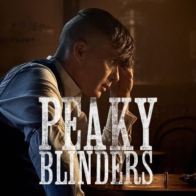

Peaky BlindersDrama | 8,5/1012/9/201360 minutos (5 Temporadas)Birmingham, año 1919. El ambicioso Tommy Shelby (Cillan Murphy) lidera a los Peaky Blinders, un grupo criminal dedicado a amañar apuestas hípicas. El inspector policial Chester Campbell (Sam Neill) llega a Birmingham desde Belfast con el objetivo de acabar con sus actividades delictivas. |

|